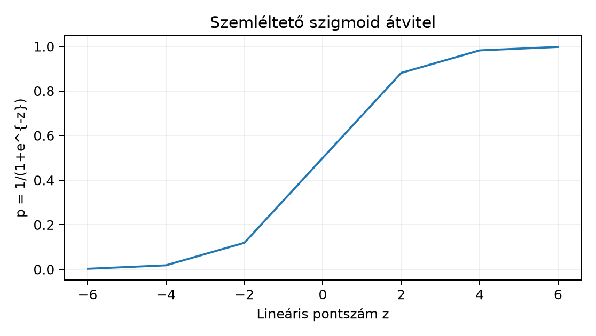

A labor Northstar-modellje elkészült: a pipeline.joblib,
a model_meta.json és a control_predictions.npz
a Modellartefaktum és betöltési határ
alfejezetben leírt kapun átment, a FastAPI-végpont a FastAPI végpont és ellenőrzött bemenet alfejezetben
ugyanezt a szerződést szolgálja ki. Most egy kutatói demót építünk,
amely ugyanazt a betanított artefaktumot használja, de emberi
bevitellel: a felhasználó egy rendelés jellemzőit adja meg, a felület
pedig megmutatja a becsült késési valószínűséget, a döntési küszöböt, a
modellverziót és az érvényességi korlátokat. Az előzetes becslés: ha a
teszt-AUC körülbelül 0,70–0,75, a demóban egy átlagos kosárra a késési
valószínűség jellemzően 0,2–0,6 közé esik; egy nagy távolságú, nem
prioritásos rendelés ennél magasabbat mutathat. A pontos érték azonban a
betanított modelltől függ, ezért a bemutató előtt a kontrollpredikciók
egyezését ellenőrizni kell.
A Streamlit egy Python-szkriptet futtat: minden widget-interakció a
teljes szkriptet újrarendezi felülről lefelé. Ez három gyakorlati
következménnyel jár. Egyrészt a drága objektumokat, például a betanított
pipeline-t, nem szabad minden újrafutásban betölteni; erre való a
st.cache_resource. Másrészt a felhasználó bemeneteit és az
előzményeket a st.session_state tárolja, mert a lokális
változók az újrafutáskor elvesznek. Harmadrészt a felület logikája azt a
szerződést jeleníti meg, amelyet a Pydantic-séma már kikényszerített az
API-ban; a UI tehát nem lehet tágabb, mint a modell érvényes bemeneti
tartománya.
A félreértések elkerüléséhez érdemes elkülöníteni a
cache-et a state-től. A cache a drága
erőforrások, például a modellbetöltés eredményét őrzi meg a
szerverfolyamat élettartamára; a betöltő függvény argumentumai alkotják
a cache kulcsát. A state ezzel szemben az adott böngészős munkamenet
állapota: a beküldött űrlap értékei, a predikciós előzmények, egy
kiválasztott összehasonlító eset. A kettőt nem cseréljük fel: a modellt
nem rakjuk session_state-be arra az esetre, ha több
felhasználó osztozik rajta, a felhasználói előzményt pedig nem tekintjük
processz-szintű erőforrásnak.
A késési célváltozó bináris: , ha a kézbesítés meghaladja a 7 napot. A logisztikus modell egy lineáris pontszámot számít a feature-vektorból:
majd a szigmoid függvénnyel képez valószínűséget:
Itt
a rendelés pillanatában ismert feature-vektor,
a feature-ek száma,
a betanított együttható,
pedig a modell által becsült valószínűség. A predict_proba
kimenete egy
alakú tömb: az első oszlop a
,
a második a
becslése. A demóban a második oszlopot jelenítjük meg.
A tisztességes megjelenítés a Kalibrált valószínűség és predikciós bizonytalanság alfejezetben tanultakra épül: a 0,73-as érték nem azt jelenti, hogy a rendelés 73%-os „valódi” eséllyel késik, hanem hogy a kalibráltnak szánt modell ezt a feltételes valószínűséget becsüli. A kalibrációt a validációs halmazon mértük, nem a UI-ban. A modellkártyán ezért mindig fel kell tüntetni a validációs Brier-pontszámot is:
ahol a validációs sorok száma, a tényleges kimenet, a becsült valószínűség. Ha például , az átlagos négyzetes eltérés 0,18, ami azt jelzi, hogy az egyedi pontbecslés körül jelentős bizonytalanság van; a UI ezt szóban és vizuálisan is jelöli, nem kelt hamis precizitást.

A döntéshez a betanítás során rögzített küszöböt használjuk: ha , a predikció „késik”, különben „nem késik”. Ez a küszöb a modellkártya része, nem a felhasználó szabadon tologatható paramétere, mert a küszöb eltolása a validációs hiba ismerete nélkül önkényes lenne.
A labor könyvtárában a következő fájlokra támaszkodunk:
artifacts/pipeline.joblib,
artifacts/model_meta.json,
artifacts/control_predictions.npz, valamint a korábban
elkészült schemas.py és model_loader.py. A
schemas.py a Pydantic szerződést tartalmazza, a
model_loader.py a hash-ellenőrzött betöltést. A demó
alkalmazásban egyetlen új modul, a streamlit_demo.py
készül.
Először telepítjük a Streamlit csomagot a projektbe, majd elindítjuk az alkalmazást:
cd lab
uv add "streamlit>=1.40"
uv sync
uv run streamlit run streamlit_demo.py --server.headless trueAz utolsó sor platformfüggetlen; Windows PowerShellben ugyanígy
futtatható a lab munkakönyvtárból. A pontos
Streamlit-verzió a saját uv.lock-ban rögzítendő; a könyv
keretjegyzete nem állítja, hogy egy adott verziókombinációt előzetesen
ellenőriztünk.
Az alábbi kód a leírt API-t használja; a könyv írásakor nem futtattuk, ezért a hozzá tartozó felületi kijelzés szemléltető jellegű.
# streamlit_demo.py — kutatói demó, új tanítás nélkül
from pathlib import Path
import json
import numpy as np
import pandas as pd
import streamlit as st
from pydantic import ValidationError
from schemas import NorthstarRequest, LatePrediction
from model_loader import load_verified_model, ArtifactVerificationError
ARTIFACT_DIR = Path("artifacts")
THRESHOLD = 0.5 # a meta is tartalmazza; itt biztonsági alapértelmezés
@st.cache_resource(show_spinner="Modell ellenőrzése és betöltése...")
def get_verified_model(artifact_dir: str):
return load_verified_model(Path(artifact_dir))
st.set_page_config(page_title="Northstar késés demó", layout="wide")
# Oldalsáv: modellkártya a meta-fájlból
meta_path = ARTIFACT_DIR / "model_meta.json"
meta = json.loads(meta_path.read_text(encoding="utf-8"))
with st.sidebar:
st.header("Modellkártya")
st.markdown(f"**Modellverzió:** {meta['model_version']}")
st.markdown(f"**Betanítási cutoff:** {meta['training_cutoff']}")
st.markdown(f"**Feature-lista:** {', '.join(meta['features'])}")
st.markdown(f"**Validációs AUC:** {meta['validation_auc']:.3f}")
st.markdown(f"**Validációs Brier:** {meta['validation_brier']:.3f}")
st.markdown(f"**Döntési küszöb:** {meta.get('threshold', 0.5)}")
st.warning(
"Kutatói demó. A valószínűség pontbecslés; a kalibrációt a "
"validációs halmazon mértük. Nem termelési döntési felület."
)
try:
package = get_verified_model(str(ARTIFACT_DIR))
model = package["model"]
except ArtifactVerificationError as exc:
st.error(f"A modellartefaktum ellenőrzése sikertelen: {exc}")
st.stop()
st.title("Rendeléskésés becslése rendeléskor")
st.markdown(
"Csak a rendelés pillanatában ismert mezőket fogadja el; minden "
"predikció a betanított modellt használja további tanítás nélkül."
)
with st.form("prediction_form"):
c1, c2, c3 = st.columns(3)
distance_km = c1.number_input("Távolság (km)", min_value=0.0, value=25.0, step=1.0)
priority_flag = c2.checkbox("Prioritás szállítás", value=False)
basket_minor = c3.number_input("Kosár értéke (EUR-cent)", min_value=0, value=5000, step=500)
quantity_sum = c1.number_input("Darabszám", min_value=1, value=3, step=1)
account_age_days = c2.number_input("Fiók kora (nap)", min_value=0, value=120, step=1)
segment = c3.selectbox("Szegmens", ["consumer", "business"])
region = c1.selectbox("Régió", ["north", "central", "south"])
acquisition_channel = c2.selectbox("Akvizíciós csatorna", ["search", "referral", "direct"])
submitted = st.form_submit_button("Predikció futtatása")
if submitted:
raw = {
"distance_km": distance_km,
"priority_flag": int(priority_flag),
"basket_minor": basket_minor,
"quantity_sum": quantity_sum,
"account_age_days": account_age_days,
"segment": segment,
"region": region,
"acquisition_channel": acquisition_channel,
}
try:
request = NorthstarRequest(**raw)
# A pipeline a meta features sorrendjében várja az oszlopokat.
frame = pd.DataFrame([request.model_dump()], columns=meta["features"])
proba = model.predict_proba(frame)[0, 1]
predicted_late = int(proba >= THRESHOLD)
result = LatePrediction(
late_probability=float(proba),
predicted_late=predicted_late,
model_version=meta["model_version"],
)
history = st.session_state.setdefault("history", [])
history.append({"input": raw, "result": result.model_dump()})
st.session_state["history"] = history[-5:]
st.success(
f"Késési valószínűség: **{result.late_probability:.3f}** "
f"(döntés: {'késhet' if result.predicted_late else 'időben érkezhet'})"
)
st.caption(
"Ez a becslés a modellkártyán jelzett validációs bizonytalansággal "
"együtt értelmezendő; egyetlen rendelés esetén nem mérési tény."
)
except ValidationError as exc:
st.error(f"Érvénytelen bemenet: {exc}")
if st.session_state.get("history"):
st.subheader("Utolsó predikciók")
st.dataframe(pd.DataFrame(st.session_state["history"]))A kód szándékosan nem hív tanítást: a model objektum a
get_verified_model cache-elt erőforrása, a predikció pedig
csak predict_proba. A widgetek minden értéket a
Pydantic-tartománynak megfelelő típusban adnak: a checkbox
lebegőpontos True helyett egész 0/1 értékké alakul, a
kategóriák selectbox-ból jönnek, így a séma nem kap
érvénytelen literált.
A szemléltető futás eredménye: a felhasználó 25 km távolságot, 50
eurós kosarat, 3 darabot, 120 napos fiókot, consumer/north/search
mezőket ad meg. A bemutató a model_meta.json szerinti
0.1.0-s verziót írja ki; a kontrollpredikciók egyezése már a betöltéskor
megtörtént. A megjelenő valószínűség a modell konkrét válasza; ha
például 0,21, akkor a lineáris pontszám
,
mert
.
A felület nem mutat konfidenciaintervallumot, mert a betanított
modellből egyetlen pontbecslés származik; a bizonytalanságot a
validációs Brier-pontszám és a szöveges figyelmeztetés jeleníti meg.
Kézi kontrollként ellenőrizhetjük, hogy a predict_proba
kimenet oszlopai összegeznek-e 1-re. A frame egy
alakú DataFrame, a proba egy
alakú NumPy-tömb; az eredmény
abszolút tűrésen belül. A döntési szabály pedig csak a meta szerinti
küszöböt használja, ezért a kijelzés determinisztikus ugyanarra a
bemenetre.
A Streamlit állapot- és cache-kezelésében nem tárolható ellenőrizetlen felhasználói bemenetből betöltött pickle/joblib objektum.
Értelmezés. A demóban a felhasználó azt látja, hogy . Írja le, mit jelent ez a modellkártya szerint, és miért helytelen a felületen azt állítani, hogy „a csomag 73% valószínűséggel késik” minden további feltétel nélkül. Hivatkozzon a validációs Brier-pontszám szerepére.
Implementálás. Bővítse a
streamlit_demo.py-t egy gombbal, amely a
session_state-ben tárolt előzményt törli, és egy másik
gombbal, amely a predikciós űrlapot visszaállítja az alapértelmezett
értékekre. A modellbetöltőhöz ne nyúljon.
Hibakeresés. Egy fejlesztő a következő sort írta
a get_verified_model helyére:
model = load_verified_model(ARTIFACT_DIR)A felhasználó azt tapasztalja, hogy minden widget-kattintás után hosszú „Modell ellenőrzése” üzenet jelenik meg. Magyarázza el a Streamlit végrehajtási modellje alapján, miért, és adja meg a javítást.
Megváltozott feltétel. A modellt újratanítják, a
model_meta.json model_version értéke 1.1.0-ra
változik, a fájlok azonos könyvtárban maradnak. A demo újraindítás
nélkül továbbra is a régi verziót mutatja. Miért nem elég a
st.cache_resource argumentumában csak a könyvtárnevet
szerepeltetni? Adjon olyan cache-kulcsot, amely verzióváltáskor
automatikusan újratölti a modellt.
Visszautalás és önellenőrzés. Hogyan kapcsolódik
a bemutató a Modellartefaktum és betöltési határ
alfejezetben bevezetett betöltési határhoz? Soroljon fel legalább két
ellenőrzést, amelyet a load_verified_model a UI előtt már
elvégzett, és indokolja, miért nem helyettesítheti ezeket a tetszetős
felület.
A a modell becsült feltételes valószínűsége annak, hogy a rendelés késik a megadott feature-ek mellett. A kalibráltnak szánt modell esetén ez azt jelenti, hogy sok hasonló, 0,73 körüli pontszámú esetből hosszú távon körülbelül 73% késhet; de egyetlen rendelésnél nincs „részleges” késés, és a becslés hibája a Brier-pontszámban jelenik meg. A 0,73 tehát modell output, nem a valóság közvetlen mérése. A validációs Brier-pontszám, például 0,18, azt mutatja, hogy az egyedi becslések átlagos négyzetes eltérése jelentős; ezért a felületnek szövegesen is jeleznie kell a bizonytalanságot.
A kiegészítő kód a form után helyezhető:
col_clear, col_reset = st.columns(2)
if col_clear.button("Előzmény törlése"):
st.session_state.pop("history", None)
st.rerun()
if col_reset.button("Alapértelmezett űrlap"):
for key in list(st.session_state.keys()):
if key.startswith("form_"):
del st.session_state[key]
st.rerun()A valódi visszaállításhoz a widgeteket key paraméterrel
kell ellátni, például key="form_distance_km", mert a
st.session_state így őrzi az értékeket. A
st.rerun újrarendezi a szkriptet, de a modell a
cache_resource miatt nem töltődik újra. A törlés után az
előzmények nem jelennek meg, mert a feltétel
st.session_state.get("history") hamis lesz.
A Streamlit minden interakcióra újrafuttatja a szkriptet felülről
lefelé; a load_verified_model(ARTIFACT_DIR) tehát minden
widget-változásnál újra deszerializálja a pipeline-t és futtatja a
hash-, séma- és kontrollpredikció-ellenőrzést. Ez a drága betöltés a
lassulás oka. A javítás a @st.cache_resource dekorátor,
amely a függvény argumentumát használja kulcsként, és a betöltött
modellt a folyamat szintjén tárolja. A kulcs itt a könyvtárnév szövege;
ha a fájlok nem változnak, a betöltés egyszer történik.
A st.cache_resource a függvény argumentumainak
hash-ét használja; ha az argumentum továbbra is
"artifacts", a cache nem tudja, hogy a fájlok megváltoztak.
A load_verified_model belül hash-ellenőrzést végez, de a
Streamlit cache előbb tér vissza a régi objektummal, ezért a meta régi
verziót mutat. Megoldás: a cache kulcsba bele kell foglalni a verziót
vagy a meta hash-ét. Például:
@st.cache_resource(show_spinner="Modell ellenőrzése és betöltése...")
def get_verified_model(artifact_dir: str, model_version: str):
return load_verified_model(Path(artifact_dir))
meta = json.loads((ARTIFACT_DIR / "model_meta.json").read_text())
package = get_verified_model(str(ARTIFACT_DIR), meta["model_version"])A meta beolvasása olcsó, és nem szükséges cache-elni. A
verzióváltáskor megváltozik a kulcs, a modell újratöltődik, a régi cache
bejegyzés elavul. A model_version mellett a meta
artifact_hashes összegét is lehet kulcsként használni, ha a
verziószám nem változna.
A load_verified_model először a fájlhasheket
ellenőrzi a model_meta.json-ban rögzített értékekkel, csak
ezután deszerializál; ellenőrzi a feature-listát a séma ellen, és a
kontrollpredikciókat a
abszolút tűrésen belül összehasonlítja. A demó emiatt tudja
megjeleníteni a modellverziót anélkül, hogy ismeretlen fájlt futtatna. A
tetszetős UI ezeket az ellenőrzéseket nem pótolja: a szép felület
ugyanazt a hibás artefaktumot is szépen mutatná, a betöltési kapu
viszont megakadályozza, hogy sérült vagy nem várt objektum kerüljön a
felületre.
A leggyakoribb hiba a vizuális megjelenítés összekeverése a statisztikai érvényességgel. Ha a UI egy 0,9-es valószínűséget piros, nagy betűkkel jelenít meg, a felhasználó hajlamos azt gondolni, hogy a modell nagyon magabiztos. Ez azonban csak megjelenítés. Tegyük fel, hogy egy buta baseline minden rendelésre 0,75-öt ad; a felület ugyanolyan figyelmeztető színnel mutatja, de a validációs Brier-pontszám magas, a megbízhatóság pedig gyenge. A kalibrációt és az általánosítást a validációs halmazon kell mérni (Kalibrált valószínűség és predikciós bizonytalanság, Hiperparaméter és nested értékelés), nem a UI színpalettájával. Hasonlóképpen hibás a widgeteket az érvényességi tartományon túlra engedni: ha a UI nagyobb távolságot vagy negatív árat fogad el, mint a betanítási adatok, a modell extrapolál, és ezt a felület nem teheti láthatatlanná.
A Streamlit-demó ugyanazt a betanított pipeline-t és meta-fájlt
használja, amelyet a FastAPI-végpont is kiszolgál, új tanítás nélkül. A
st.cache_resource a drága modellbetöltést őrzi, a
st.session_state a felhasználói előzményt és űrlapállapotot
tárolja, a Pydantic-séma pedig ugyanazt a bemeneti tartományt ellenőrzi,
mint az API. A modellkártya a verziót, a feature-listát, a validációs
AUC-t, Brier-pontszámot és küszöböt mutatja; a prediktív valószínűség
pontbecslés, amelyet a UI szövegesen is annak nevez. A betöltő hash- és
kontrollpredikció-ellenőrzése biztosítja, hogy a látványos felület ne
takarjon el sérült artefaktumot. A következő alkalmazás Kiadás, visszaállítás és terhelési próba: kiadás,
visszaállítás és terhelési próba, ahol a demó azt kérdezi meg, hogyan
válik ellenőrzött szolgáltatássá.